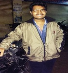

Hi. I am Krishna Saradhi , founder of GOODCREED and designer of
this GATE Online Test Series .I am a gate aspirant like you and i have completed my B-tech from JNTUH college of Engineering
,Hyderabad in Computer Science and Engineering in 2015.
I have taken gate exam in 2015 and ended up with 5083 rank.
When i first started preparing for the gate exam , i found it very difficult to select an online test series best suitable for me.
There are many online test series available
out there with big names.Big names comes with big price.Even if we decide to buy the
test series by spending the money , they may still lack some of the features like chapter
wise tests and unit tests etc.If we want to have all the features , then we have to pay
extra money and get the best test series.So i thought,if i am facing this difficulty,
then every gate aspirant might be facing this difficulty.So i have designed this website
considering all the common , basic and advanced features one tets series has to have
which makes the aspirant life easy and allows him to focus more on gate preparation rather
than wasting time in selecting the test series.